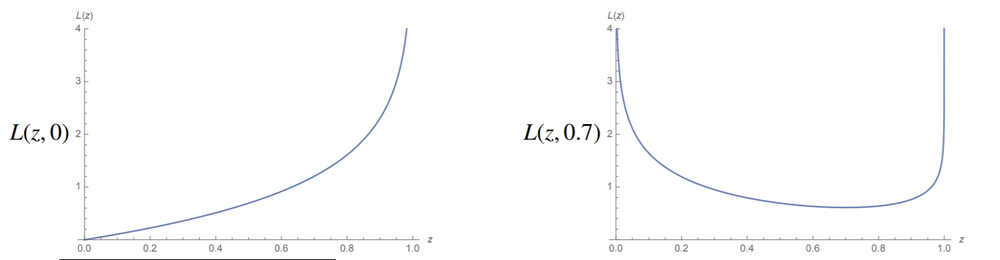

Regression
Contents
Regression¶
Regression is the second kind of prediction: we are predicting a numerical value. In GDA/LDA, we get posterior probabilities too- so they are technically doing regression as well as classification.
The goal is to choose a regression function \(h(x; p)\), called \(h\) for hypothesis function. It performs the same function as the decision function in classification, except our prediction serves a different purpose. We also need a cost function \(J(w)\) to optomize. There are many choices for regression and cost functions.
Least-Squares Linear Regression¶
The goal in (linear) regression is finding \(w\) that minimizes \(||Xw-y||^2 = \text{RSS}(w)\), aka residual sum of squares, which can be done by calculus. We apply calculus to find the critical point.
There exist several ways to compute \(\nabla_w ||Xw-y||^2\). First, expanding \(||Xw-y||^2\) gives us
Now, taking the gradient of this with respect to \(w\) gives us
When we set this equal to 0, we can reduce this further to give us normal equations
Here, \(X^TX\) is a \((d+1) \times (d+1)\) matrix (accounting for the bias term), and \(w\) and \(X^Ty\) are length-\(d+1\) vectors. So we have a system of equations here to solve. Where we know that \(X^TX\) is positive semidefinite.
If \(X^TX\) is singular, then we know all our sample points lie on a common hyperplane in \(d+1\)-dimensional space. In this case, the normal equations are underconstrained. This gives us a situation where \(X^TX\) might not be positive definite, and may have some 0 eigenvalues. When this occurs, we know \(w\) has more than one solution; in fact, infinite solutions However, there will always be at least one solution for \(w\).
For now, suppose that \(X^TX\) is invertible and positive definite. Then, there will be a unique solution \(w^*\). We use a linear solver to find \(w^* = (X^TX)^{-1}X^Ty\). Note: don’t actually compute the inverse of \(X^TX\)! We don’t need to.
Note that \((X^TX)^{-1}X^T\) is a linear transformation that maps a length-\(d+1\) \(y\) to a length-\(d+1\) weight vector \(w\). This matrix is called pseudoinverse of \(X\), labeled \(X^+\) for convenience. Every matrix \(X\) has a pseudoinverse \(X^+\). Note that it is a d+1 x n matrix (whereas \(X\) is an n x d+1 matrix). In an ideal world, if the points \(y\) did actually lie on a hyperplane, then \(y = Xw\). So it’s only natural that we take the inverse of \(X\) to get \(w\).
If \(X^TX\) is invertible, then \(X^+\) is a left inverse of \(X\). Note: \(X^+X = (X^TX)^{-1}X^T = I\), so we can see that it is indeed an inverse of \(X^TX\) if multiplied on the left. Note that \(XX^+\) is generally NOT equal to \(I\).
Once we do the regression, we can go back and look at our predictions for our sample points using the regression function. A prediction for sample point \(X_i\) will give us \(\hat{y}_i = w \cdot X_i\). Doing it all at once gives \(\hat{y} = Xw = XX^+y = Hy\), where \(H = XX^+\). \(H\) is called the hat matrix, which is an \(n \times n\) matrix, since it is a linear transformation that puts a hat on \(y\).
So \(y\) is the real set of labels, \(\hat{y}\) is our predictions.
Advantages of Least-Squares Regression (vs. Other Regressions)¶
Why is least squares regression so popular? There are a couple of reasons.
Least squares regression is easy to compute for \(w\), since we’re just solving a linear system.
It also gives a unique solution \(\hat{w}\), unless underconstrained- and even this can be dealt with fairly easily (more on this later).
\(\hat{w}\) is generally considered a stable solution as well: small changes to the data \(X\) will not likely change it. So it’s resistant to overfitting.
Disadvantages of Least-Squares Regression¶
However, there are some disadvantages as well:
Least-squares is very sensitive to outliers, since errors are squared.
If \(X^TX\) is singular, then it won’t have a unique solution. Again, in this case our problem is underconstrained and we need another way.
Logistic Regression¶
Probably the second most popular kind of regression is logistic regression. In logistic regression, we utilize the logistic regression function, whose outputs can only be probabilities- thus between 0 and 1. Additionally, we now use logistic loss instead of the squared loss we are so familiar with. The main application for logistic regression is classification- specifically, binary classification.
Remember that generative models build a full probability model of all probabilities involved, i.e. class-conditional distributions. These include LDA and QDA. On the other hand, discriminative models try to interpolate and model the posterior directly. Posterior probabilities are often well-modeled by the logistic function.
So in logistic regression, the goal is to find \(w\) that minimizes
where \(L\) is the logistic loss function. Plugging that in, we get:
Let’s take a look at what exactly we’re minimizing. For truth value \(y=0\), the logistic loss for a prediction \(z\) looks like:
{kind=link}
In the left example, we have logistic loss for truth value \(y=0\). Note loss goes to infinity when prediction goes further away to 1. Obviously, loss gets smaller the closer the prediction gets to the truth. On the right, we have it when the truth value is \(y=0.7\).
The logistic cost function is smooth and convex. While there doesn’t exist a closed-form solution for maximal \(w\) (unlike with least squares), there are many ways to solve it, including gradient descent and Newton’s method. Let’s first try gradient descent.
To do gradient descent, we need to compute the gradient of \(J(w)\) with respect to \(w\).
First, we know that the derivative of the sigmoid function \(s(\gamma)\) is \(s'(\gamma) = s(\gamma)(1-s(\gamma))\). We can see that the derivative is maximized at 0: this shouldn’t be surprising, considering the sigmoid function’s slope is also maximized at \(\gamma = 0\).
Now let \(s_i = s(X_i \cdot w)\).
We know that \(\nabla s_i\) is basically the derivative of sigmoid, so we can reduce this to
where \(s\) applies the sigmoid function element-wise on \(Xw\).
So now that we’ve found \(\nabla_w J\), we can write out our gradient descent rule:
We can also write out the stochastic gradient descent rule, which is just element-wise instead of everything:
The stochastic gradient descent algorithm for logistic regression works best if we shuffle the points randomly, then process one by one. For large \(n\), it is common that SGD converges before we process all the points.
Notice the algorithm’s similarity to the perceptron learning rule:
The only difference is that the \(s_i\) sigmoid term is new, and we’re not actively looking for misclassified points.
Now here’s the cool part about gradient descent with logistic loss: starting point \(w = 0\) will always converge.
If our training points are linearly separable, then applying logistic regression will always find a complete separator. Let’s say we have a complete linear separator \(w \cdot x = 0\). Now scaling our weight vector \(w\) to have infinite length will cause \(s(X_i \cdot w) \to 1\) for points in class C, while \(s(X_i \cdot w) \to 0\) for points not in class C (correct prediction probabilities maximized). It is easy to verify this yourself: take the limit of \(s(Xw)\) as \(||w|| \to \infty\). As a result, \(J(w) \to 0\). Therefore, logistic regression always finds a linear separator, and it will be this exact weight-scaled separator with minimal \(J(w)\).